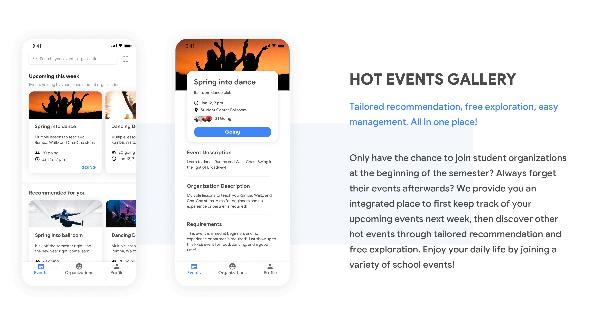
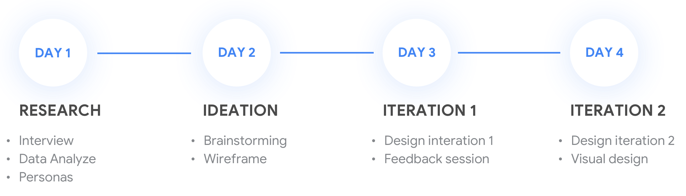
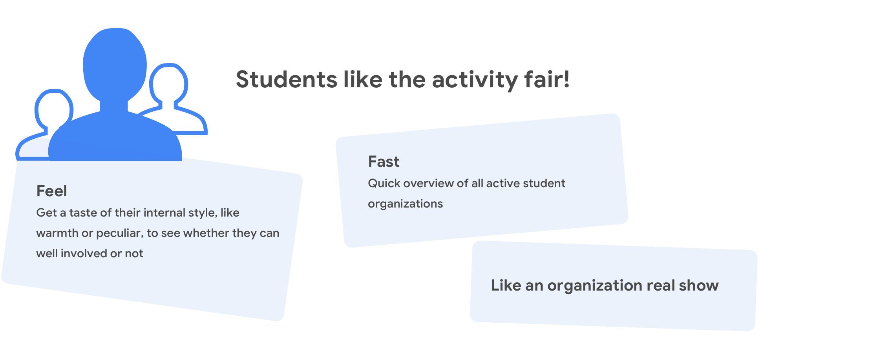
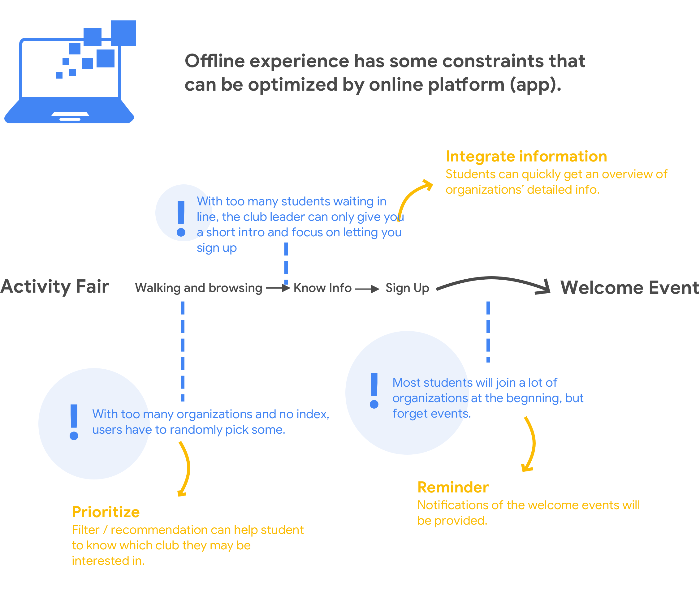
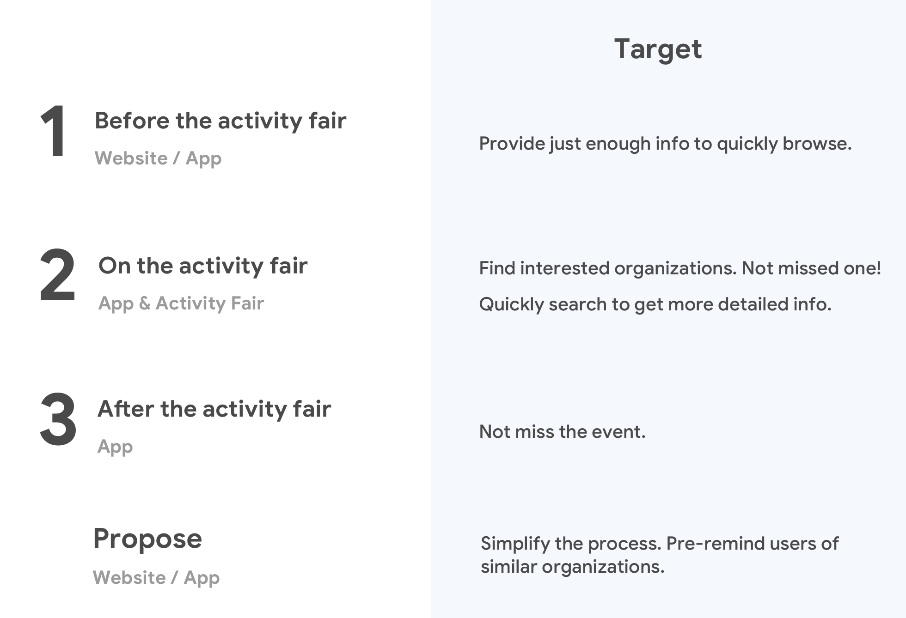
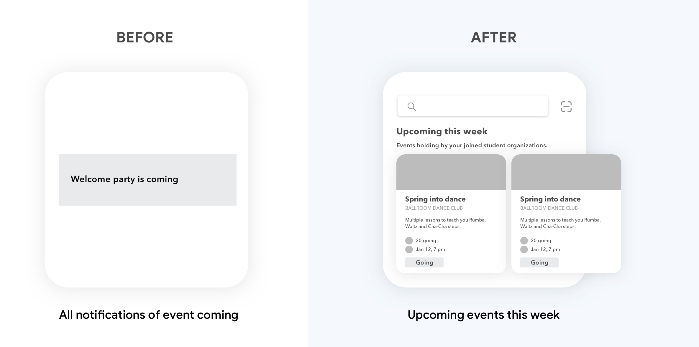
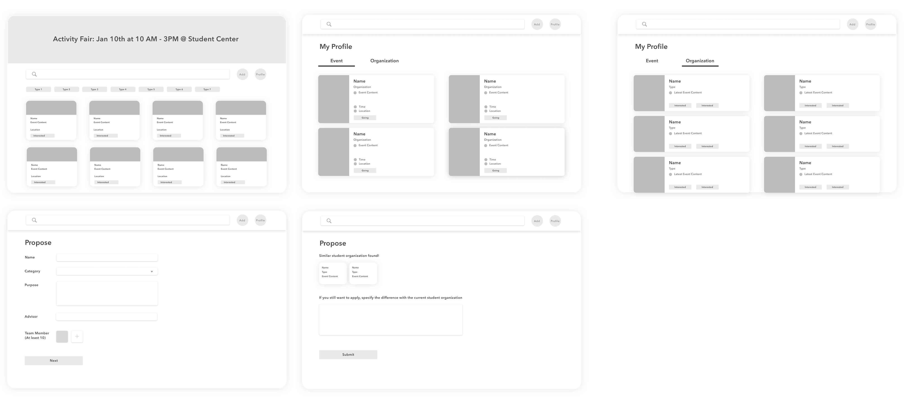

Overview.
Background.
There are 450 organizations in Georgia Tech. Most students will only explore new student organizations at the activity fair, which is a huge gathering for all student organizations at the beginning of the semester. Moreover, many students may join a lot of organizations at the beginning, but only actively involve in 1-2 later, whether because they forget events or the organization is not active at all.
For proposing experience, about 20-30 students will attempt to propose a student organization each semester, but only about 5-10 get approved. The process of proposing is really complicated. It always comes to problems like it's hard to find an advisor or similar organizations already exist...
Design outcome.
Both app and website are provided to combine the online and offline (activity fair) experience. Instead of just providing information relate to organization, here, I decided to focus on events information to help users browse in daily life. The key features are as below:
Process
Understanding.
Interview
As the user group were new students who want to join or propose a student organization, I started by a semi-structured interview with my classmates who had related experience before. The objectives for the interview mainly include:
- What’s their motivation for joining?
- How to find the organization they’re interested in?
I recruited 6 people who all had joining experience before. However, only one student had proposing experience. Other students I reached out to either did not have related experience, or could not remember details. So I decided to look for some help at Student Engagement (which was responsible for managing student organization in Georgia Tech) and conducted a stakeholder interview with their associates dean.
Analyze
Students mainly have 4 ways to discover student organizations. Almost everyone join by the activity fair. A lot join later by the friends' recommendation and posters. However, only a minority of people browse the website before going to the activity fair —— some think it's unnecessary, while others don't know there is a website at all.
'Browse', 'search' experience
From the research, main pain points lie in 'website browse' and 'activity fair'. The user flow and pain points are as below:
What's wrong with 'browse', 'search' experience?
Students attempt to propose about 20 -30 organizations each semester, but finally about 5 - 10 get approved. Students give up either because the process is too long or similar organizations exist.
What's wrong with 'propose' experience?
For browsing experience, one important factor is what information we want to provide to users. Therefore, I asked users to rank information they care in the interview. The results are categorized into the following primary and secondary factors. Among these, users especially care about 'event' information, including latest events and event content.
What information do users care when browsing?
Personas
Finally I built the personas which include main frustrations for users. I referred to them a lot at the next stage of design to make sure my design solves users' challenges.
Ideation.
For the browsing experience, the current method is mainly offline (activity fair), although a small group of people will use website to browse first. So which could provide a better experience? Online (website or app) or offline (activity fair)?
Why we need offline (activity fair) experience?
Then why we need online experience?
So, can we combine the offline and online experience? The advantage of this is:

What method to propose?
For the proposing experience, as summarized in the research, the current method is too complicated. Students need to learn about the process first, go to Student Engagement to set up a portal, and then submit related materials. So can we simplify the process - let users directly submit the materials? Actually we can integrate the process instruction and material submission portal to one platform.
Then which platform to use? As users need to fill out a lot of information when proposing, and sometimes need to go back again to refill it. Website instead of app is more suitable here.
Refined experience.
So from the previous analyze, the activity fair should still be our focus, but we could use online platform (app) to optimize their offline experience. Different stages of the refined experience are categorized based on the activity fair, and their targets are:
Design
Because of time constraints, and app covers mainly usage for browsing and searching, I focused on the app design. But a basic version of website was also provided.
Sketching.
As our target was to utilize app to optimize the activity fair's experience. I started from the pain points of the activity fair and proposing experience, and designed the corresponding features to solve challenges, with keeping in mind the targets for each steps.
Design iteration 1
Right now the design covers the activity fair experience. But if it mainly designed for the activity fair, although it has other functions like managing all events and organizations, I felt it was hard for students to find a strong motivation to open it later. So students may only use it once.
I looked back to research. One feedback is that 'Most users will join a lot at the beginning but forget to join the events later'. It inspired me that one step is actually missing here.
So can we apply this not only for the campus fair but also for daily usage?
If users can explore some events to join in their daily life, it could help them to join some regular events. Moreover, even some organization that they have not joined before at the activity fair, they could still explore those here. Let the app becomes a way to discover school events! So I focused on the 'event' and made the following refinements:
Change 1: Reconsider the navigation bar.
Change 2: To suit more to daily life, focusing on events.
Change 3: Event notification.
Wireframe.
Now we covered all their experiences not only for the activity fair, but also for daily usage. In order to conduct a feedback session to identify potential issues, I drew a complete wireframe with details inside to clarify the whole flow.
The web version of corresponding functions is as below:
Design iteration 2.
I conducted feedback session for 3 users. I simply showed them my wireframes and walked through the user flow to see if there was any problem. Based on the feedback, I identified 2 main issues:
(1)'Everytime I look at it, the order may change. It's wierd'. Also the order is generated based on current location, and 'the accuracy of location may be pretty low.'
(2)'Except from the booth number, I cannot feel an activity fair is ongoing.'
2.'Just from the design, I didn't realize the proposing process is so complicate.'
Visual design
When deciding the visual style of the system, I kept in mind of the target user (new student) and the context (campus) and drew the mood board. Two keywords are summarized - youthful and modern.

Hifi design
Because of the time constraints, I only drew the hifi of browsing and exploring experience on the app. The website version and proposing experience on the app are shown with the low fidelity design below.


Future steps.
Cross-Platform Adaptation
The proposed experience is cross-platform, in which browsing and searching mostly happens on the app, while website provide a better proposing experience. But due to the time constraints, I mainly focus on the app design and website proposing design. More details of website design should be considered later.
Further Cooperation with Student Engagement
For the proposing experience, although I’ve tried to optimize it to make it shorter, it still needs to negotiate with Student Engagement later, like revising the proposal and presenting to the committee. So it’s still the first step! More deeper research can be conducted with Student Engagement together to optimize the whole proposing flow.
Task-based Usability Testing
Due to the time constraints, I only conducted 3 feedback session to walk them through. But I didn’t have time to evaluate it using task-based usability testing. Iteration never ends!
Wowwww! You make it! Thanks for reading through all the process patiently! Actually this is my first design challenge. At first, I was kind of frustrated. The solution I brought up can only solve part of the problem but unable to polish it to perfection feels really bad! But later when I try to think broader and broader: from mainly focusing on website / app, to integrating the online and offline experience, to applying it not only for activity fair but for daily usage. I realize every problem could find its potential! We just need to think bold with keeping in mind every step has intentional decision making. However, I still feel there is a lot of things I could improve. Mostly when I faced with a challenge, one idea always directly come to mind. But if I have time, I should provide more design alternatives, even for some small details. Anyway, improving never ends! Thanks again and hope to hear from your feedback :)